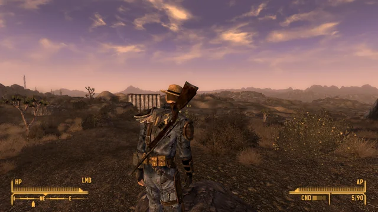
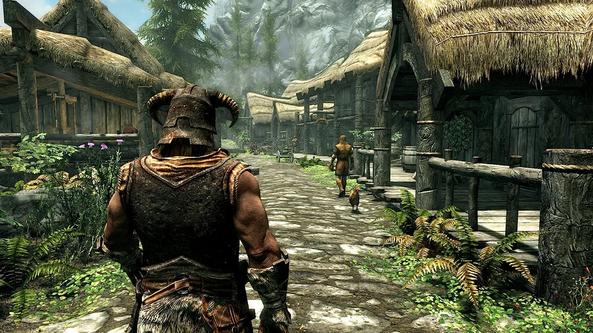

Obsidian Entertainment apresenta novas funcionalidades e melhorias em Fallout: New Vegas que foram implementadas desde Fallout 3. Por exemplo, o motor de jogo Gamebryo original de Fallout 3 foi retrabalhado para acomodar as luzes extras e seus efeitos para New Vegas, como é em Las Vegas.
O Vault-Tec Assisted Targeting System, ou V.A.T.S, retorna com a adição de vários ataques específicos ao modo. Também foram adicionadas novas armas, um sistema de modificação de armas, a capacidade de usar a mira de ferro em quase todas as armas (exceto armas maiores, que são disparados a partir do quadril) e uma melhor visão sobre o ombro para o combate na terceira pessoa. Está disponível a manipulação de munições, criando novas munições com os cartuchos utilizados. Há também um sistema de colheita de plantas semelhantes a série The Elder Scrolls, permitindo ao jogador usar plantas para criar drogas, remedios entre outros.
Enredo
Fallout: New Vegas se passa durante o ano de 2281 e em volta da região em torno da antiga cidade de Las Vegas (agora chamada de "New Vegas"), cerca de quatro anos após os eventos de Fallout 3, e aproximadamente 204 anos desde a Grande Guerra de 2077. No tempo em que o jogo começa, três grandes facções buscam o controle de New Vegas e seus arredores – A New California Republic (NCR), Caesar's Legion, e Mr. House. Desde suas últimas aparições em Fallout 2, a NCR ficou sobrecarregado e mal administrado, porém sua expansão para o leste permitiu-lhes o ganho da maioria dos territórios no Mojave, com a única ameaça deles vinda dos escravistas, forças com exercito no estilo romano, liderado pelo seu líder Caesar, que conquistaram e uniram 86 tribos mais ao leste, e agora planejam conquistar New Vegas, quatro anos antes do início do jogo, ambos os lados entraram em conflito na represa de Hoover Dam, um importante ponto de referência que fornecia energia para New Vegas, que no qual os dois lados buscavam o controle, ambos os lados se prepararam para o segundo, e inevitável conflito sobre Hoover Dam, Mr House, um misterioso homem de negócios que presidia New Vegas, sendo de fato líder com um exército de "Securitrons", robôs de segurança, e que também tem interesse no controle da barragem garantindo que nenhum dos outros dois lados ganhe o controle, e esta nos estágios finais de seus planos.

Fallout: New Vegas – Cena
The Elder Scrolls V: Skyrim
The Elder Scrolls V: Skyrim
Jogabilidade
Skyrim é um jogo de RPG que mantém a tradicional jogabilidade de mundo aberto encontrada na série The Elder Scrolls. O jogador é livre para andar pela terra de Skyrim a sua vontade. Em Skyrim há nove grandes "posses", com nove capitais que são as principais cidades do jogo. Também há várias pequenas aldeias, cavernas, templos, fazendas e montanhas. Cada vilarejo e cidade possui sua própria economia, que o jogador pode manipular ou sabotar se escolher fazer isso. Ao visitar as cidades, o jogador pode completar atividades como cozinhar, agricultura, cortar madeira e criar itens de metal na forja mais próxima, como também aceitar trabalhos (chamados de "Quests") para ganhar dinheiro. Qualquer trabalho que um NPC pode realizar também pode ser feito pelo jogador. O nível do jogador aumenta quando suas habilidades aumentam. Dezoito habilidades estão presentes em Skyrim, e o sistema de classes de Oblivion foi removido. Perks (ou bônus) são capacidades específicas de cada habilidade, organizada em um sistema de grupo de ramificações chamado de "árvores de Perks". Cada aumento de nível permite que outro benefício seja escolhido. Existem 280 perks (ou bônus), e agora é possível passar do nível 81, mas depois disso a taxa de aumento das habilidades é reduzida. O HUD na tela apenas aparece quando a vida, energia ou mágica do jogador estão se esgotando. Itens e esquemas de equipamentos podem ser salvos por um menu de rápido acesso, e o menu de inventário na tela de pause é apresentado em uma sobreposição em estilo bússola; enquanto que no inventário, o jogador pode girar e se aproximar dos itens adquiridos.
Sinopse
O jogador entra na pele do último Dovahkiin, que tem o dever de livrar a província de Skyrim da tormenta causada pelos dragões e seu líder Alduin. O jogo se passa duzentos anos depois dos eventos de Oblivion. Na premissa, o Império começa a ceder territórios para as nações Élficas uma vez governadas, porque não há nenhum herdeiro para o trono do Imperador. Os Blades não tem ninguém para defender, e gradualmente morreram, foram assassinados ou se isolaram do resto do mundo. Depois do assassinato do Rei de Skyrim, uma guerra civil irrompe entre as raças nativas Nord — sendo a maioria aqueles que desejavam que Skyrim se separe do Império, e o resto sendo aqueles que desejam que Skyrim permaneça no Império.
Como os jogos Elder Scrolls anteriores, Skyrim começa com o personagem do jogador como um prisioneiro desconhecido, condenado por cruzar a fronteira e ser confundido com um Stormcloak. Tendo que enfrentar, nesse novo capítulo da série, Alduin. Alduin foi, em tempos remotos, o líder dos dragões que dominavam o mundo e escravizavam todos os seres humanos, até que um dia foi derrotado por nórdicos, depois da derrota de Alduin, os outros dragões começaram a serem mortos, isso, muito tempo antes da história que o jogador vive em Skyrim. O personagem do jogador é o último Dragonborn (Nascido do Dragão), um caçador de dragões que tem o objetivo de afastar a ameaça que Alduin representa para Skyrim e Tamriel. Ajudando o jogador está Esbern (dublado por Max von Sydow) e Delphine talvez os últimos Blades vivos.

Skyrim - Cena
Música
O grupo escolhido pelo Jeremy Soule para compor a música de Skyrim também foi responsável pelos trabalhos em Morrowind e Oblivion. Ele compôs "Sons of Skyrim", música tema do jogo e foi gravada com um coro de mais de 30 pessoas, cantando na língua dos dragões. O Diretor Criativo Todd Howard imaginou a música tema para Skyrim como uma música de Elder Scrolls cantando por um coro de bárbaros. Isso se tornou uma realidade quando a ideia foi aprovada por Jeremy Soule, que gravou o coro de 30 homens em três gravações diferente e juntou em três camadas separadas ao mesmo tempo para criar o efeito de 90 vozes. A linguagem, Draconiana, foi criada pelo artista de conceito da Bethesda Adam Adamowicz, e ele desenhou os 34 caracteres do alfabeto rúnico para o jogo. O léxico Dracônico pode ser expandido conforme a necessidade; o designer-chefe Bruce Nesmith explicou que, palavras foram introduzidas no léxico "sempre que [a equipe] precisava dizer algo".